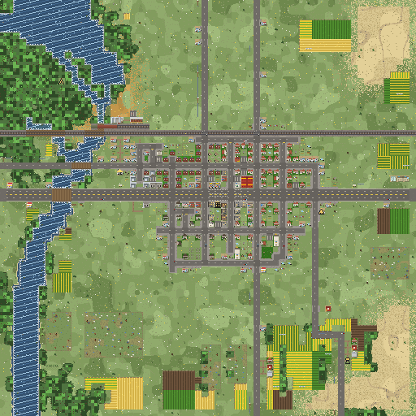
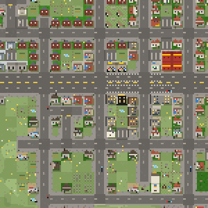
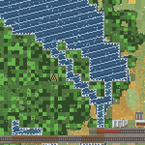
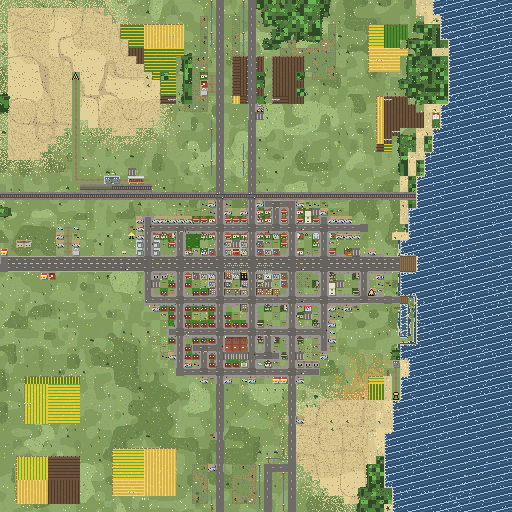
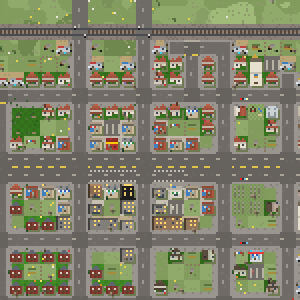
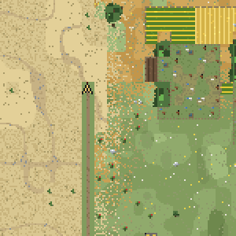
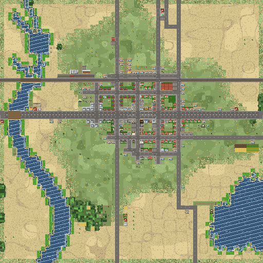
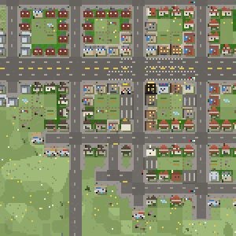
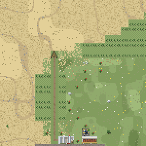
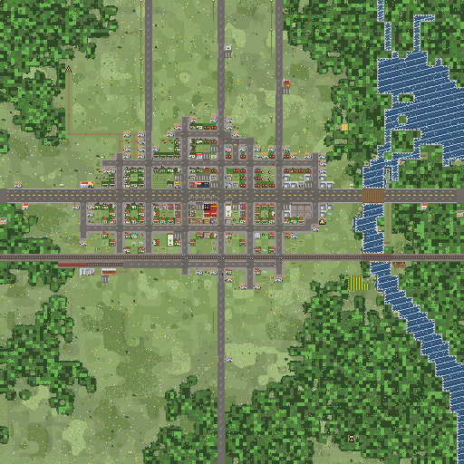
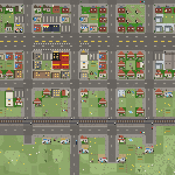
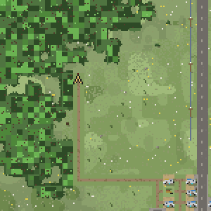
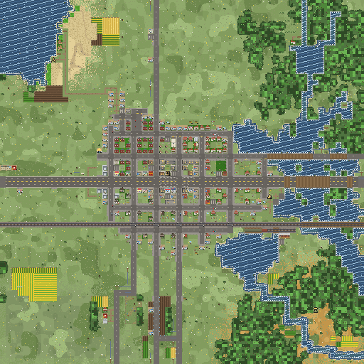
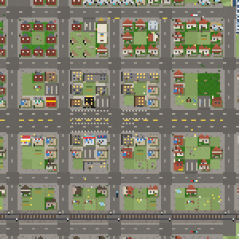
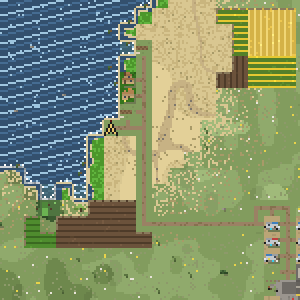
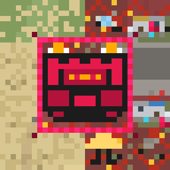
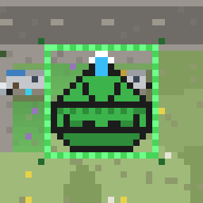
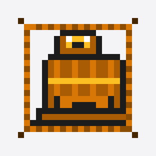
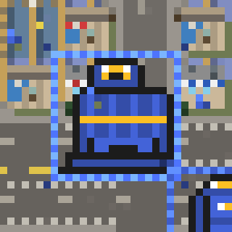
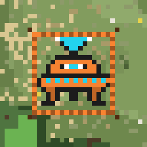
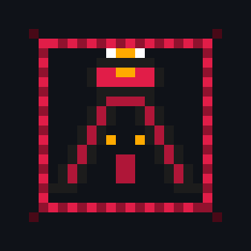
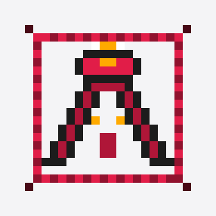
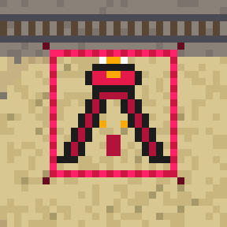
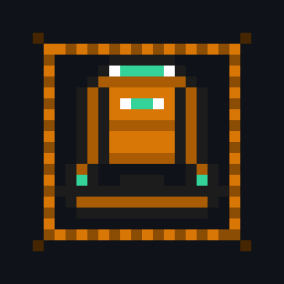
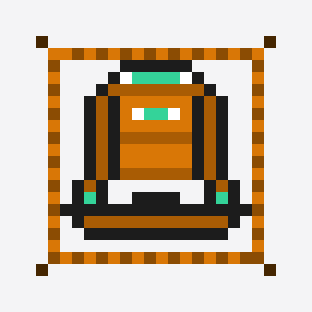
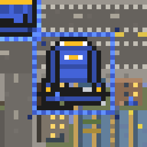
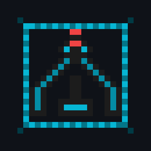
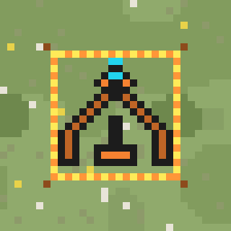
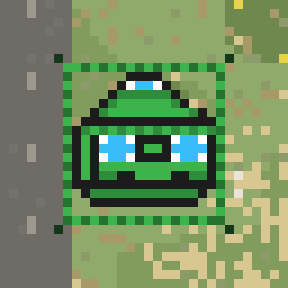
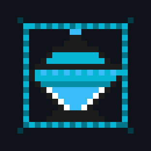
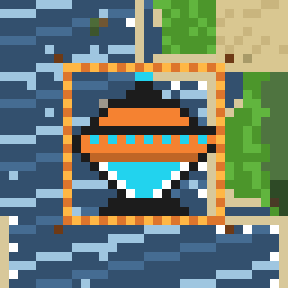
All 121 world assets classified by category, visual signature, placement constraints, and static vs animated rendering modes.
| ID | Asset Name | Category | Animation Mode | Visual Signature | Placement & Realism Rules |
|---|---|---|---|---|---|
ENV-01 |
Temperate Grass | Terrain | STATIC (1f) | Multi-octave rolling green, light/shadow flecks | Organic meadow feel; zero repeating grid lattice |
ENV-02 |
Rock Outcrops | Terrain | STATIC (1f) | 3-px stone cluster on high elevation contours | Restricted to ridge-lines; cast shadow south-east |
ENV-03 |
Brush Pockets | Terrain | STATIC (1f) | Clustered scrub bush pixels + cast shadow | Natural dispersal along tree lines and fence shoulders |
ENV-04 |
Country Trees | Terrain | STATIC (1f) | 2x2 foliage canopy + trunk gap + shadow | Species mix: pine, oak, autumn maple, dead snag |
ENV-05 |
Standing Woods | Terrain | STATIC (1f) | Dense clumped light/dark canopies w/ edge bleed | Organic canopy clumps; sunlit northern fringe |
ENV-06 |
River Reach | Terrain | ANIMATED_4 (4f) | Deep blue-grey water w/ surface ripple glints | Monotonic downstream flow; gravel/sand shore margins |
ENV-07 |
Creek Tributaries | Terrain | ANIMATED_3 (3f) | Narrow 1-tile channel a shade greener than river | Feeds into main river; flanked by willow trees |
ENV-08 |
Lake Basin | Terrain | ANIMATED_4 (4f) | Wide water body w/ drifting glint rows & reed sway | Deep center color, shallow margins w/ reeds |
ENV-09 |
Desert Dunes | Terrain | STATIC (1f) | Warm sand w/ windward dune crest lines | Organic sand ripples; dry scrub flecks |
ENV-10 |
Saguaro Stands | Terrain | STATIC (1f) | Green vertical arms w/ cast shadow | Restricted to desert biome; natural clustering |
ENV-11 |
Desert Dry Wash | Terrain | STATIC (1f) | Winding gravel/sand arroyo bed cutting terrain | Cuts across desert contours; stone-lined edges |
ENV-12 |
Desert Oasis | Terrain | ANIMATED_2 (2f) | Green water margin w/ date palm canopies & shimmer | Emerges where river cuts through desert |
ENV-13 |
Forest Floor | Terrain | STATIC (1f) | Darker damp loam, fallen logs, red mushrooms | Mossy textures under dense canopy shade |
ENV-14 |
Autumn Foliage | Terrain | STATIC (1f) | Warm amber, ochre, and rust tree canopies | Gradual color grading at autumn biome edges |
ENV-15 |
Riparian Willows | Terrain | STATIC (1f) | Drooping pale green canopy along riverbanks | Anchored to river edge tiles; casts shadow on water |
ENV-16 |
Utility Poles | Terrain | STATIC (1f) | Vertical pole w/ crossarm every 3 tiles | Follows rural roads; wire spans connect poles |
ENV-17 |
Hedgerows | Terrain | STATIC (1f) | Dense brush line along field boundaries | Separates crop parcels from open meadow |
ENV-18 |
Shelterbelts | Terrain | STATIC (1f) | Linear conifer windbreak rows | Positioned on north/west sides of farmsteads |
ENV-19 |
Stock Tank Pond | Terrain | ANIMATED_2 (2f) | Small circular water body w/ mud ring & reflection | Located in pasture corners; trampled earth fringe |
ENV-20 |
Ecotones (3-Ring) | Terrain | STATIC (1f) | Graded 3-tile transition band between biomes | Sand -> Scrub -> Grass; zero hard pixel cuts |
ST-01 |
4-Lane Highway | Infrastructure | STATIC (1f) | Crisp dark asphalt, white shoulders, yellow seam | Double-yellow centerline; cuts town cleanly |
ST-02 |
2-Lane Street | Infrastructure | STATIC (1f) | Medium-tone weathered asphalt w/ faint center line | Flanked by concrete sidewalk skirts in town |
ST-03 |
Cul-de-Sac Bulb | Infrastructure | STATIC (1f) | Circular asphalt turnaround terminating a court | 2-5 per town; homes ring the perimeter |
ST-04 |
Dirt/Gravel Lane | Infrastructure | STATIC (1f) | Mottled two-tone brown rutted track w/ ditch lines | Leads to farmsteads and agricultural parcels |
ST-05 |
Road Bridge | Infrastructure | STATIC (1f) | Plank/deck texture w/ structural side railings | Stone piers visible at water edges; road travels cleanly |
ST-06 |
Main St Crosswalks | Infrastructure | STATIC (1f) | Crisp white zebra stripe markings | Located at downtown 4-way and T-junctions |
ST-07 |
Traffic Lights | Infrastructure | ANIMATED_3 (3f) | Paired red/green lamp heads on black post | Downtown intersections; cycles state every 10s |
ST-08 |
Stop Signs | Infrastructure | STATIC (1f) | Red octagonal head on metal post | Positioned where side streets tee into avenues |
ST-09 |
Streetlights | Infrastructure | ANIMATED_2 (2f) | Metal post w/ warm luminescent head | Placed along commercial and Main St sidewalks; night glow |
ST-10 |
Railroad Track | Infrastructure | STATIC (1f) | Ballast gravel bed, wood ties, twin steel rails | Orthogonal line crossing map; level crossings |
ST-11 |
Rail Trestle | Infrastructure | STATIC (1f) | Heavy timber deck crossing water | Timber bents supporting track over water |
ST-12 |
Crossbuck Crossing | Infrastructure | ANIMATED_2 (2f) | White X sign + red flashers at street rail crossings | Alternating red flashers when train approaches |
ST-13 |
Rail Siding Spur | Infrastructure | STATIC (1f) | Secondary track stub serving grain elevator | Parallel to main line; holds parked boxcars |
ST-14 |
Parked Boxcars | Infrastructure | STATIC (1f) | Rust/olive freight cars on elevator siding | Clustered on industrial rail spur |
ST-15 |
Highway Billboards | Infrastructure | STATIC (1f) | White ad board on twin posts along highway | Positioned on rural highway approach verges |
ST-16 |
Welcome Signs | Infrastructure | STATIC (1f) | "Mundane Falls City Limits" board | Flanks Main Street entrances to town |
ST-17 |
Concrete Weirs | Infrastructure | ANIMATED_3 (3f) | Low dam wall across river w/ white water cascade | Regulates river elevation; animated cascading water |
ST-18 |
Property Stakes | Infrastructure | STATIC (1f) | Cult-colored dashed boundary cord on lots | Outlines purchased wilderness parcel borders |
RES-01 |
House: Ranch/Long | Residential | STATIC (1f) | 1-story wide facade w/ attached garage bay | Siding/roof color hashed; front lawn + driveway |
RES-02 |
House: Two-Story | Residential | STATIC (1f) | Compact footprint w/ upper ridge & dormer dots | Elevated shadow; classic colonial/suburban profile |
RES-03 |
House: L-Plan | Residential | STATIC (1f) | Asymmetric L-footprint w/ recessed front porch | Shaded porch nook; rear patio in backyard |
RES-04 |
House: Bungalow | Residential | STATIC (1f) | Square footprint w/ full-width shaded veranda | Front steps visible; gables align to street frontage |
RES-05 |
Trailer Home | Residential | STATIC (1f) | Narrow rectangular tin body w/ hitch tongue | Propane tank, plastic window awning, skirt trim |
RES-06 |
Trailer Court | Residential | STATIC (1f) | Dirt court lane w/ trailers on both sides | Tight packing; tire piles, scrap metal accents |
RES-07 |
Detached Garage | Residential | STATIC (1f) | Small flat-roof bay on rear of lot | Connected to street via narrow concrete driveway |
RES-08 |
Backyards | Residential | STATIC (1f) | Block interior: shed, garden, pool, clothesline | Never contains a house; lush garden fences |
RES-09 |
Above-Ground Pool | Residential | ANIMATED_2 (2f) | Circular blue pool w/ white plastic rim & water glint | Appears in select residential backyards |
RES-10 |
Front Curbside | Residential | STATIC (1f) | Mailbox on post + fire hydrant on corner | Placed on street-front verges |
RES-11 |
Chimney Smoke | Residential | ANIMATED_3 (3f) | Gentle woodsmoke plume drifting southeast | Select residential houses during morning/evening |
COM-01 |
Main St Block | Commercial | STATIC (1f) | Contiguous attached brick buildings w/ parapets | Party-wall vertical seams; glass storefront display |
COM-02 |
Strip Shop | Commercial | STATIC (1f) | Colorful striped awnings (red/blue/green) | Awning pattern variations; front entrance door |
COM-03 |
Roadside Diner | Commercial | ANIMATED_2 (2f) | Streamlined chrome body w/ red neon roof band | Front parking apron; pulsing neon glows on pavement |
COM-04 |
Gas Station | Commercial | ANIMATED_2 (2f) | Illuminated red canopy over yellow gas pumps | Corner lot; pulsing neon pricing sign |
COM-05 |
Laundromat | Commercial | STATIC (1f) | Glass storefront w/ circular washer porthole dots | Strip filler; tiled interior hint |
COM-06 |
Cinema | Commercial | ANIMATED_2 (2f) | Dark facade w/ illuminated marquee canopy | Chasing marquee bulb frame; front poster cases |
COM-07 |
Bank | Commercial | STATIC (1f) | Formal classical stone facade w/ column hints | Prominent downtown corner presence |
COM-08 |
Post Office | Commercial | STATIC (1f) | Brick civic structure w/ blue/red flag stripe | Delivery loading bay in rear |
COM-09 |
Office Block | Commercial | STATIC (1f) | Multi-story grey block w/ regular window grid | Flat gravel roof w/ HVAC chillers |
COM-10 |
Highway Motel | Commercial | ANIMATED_2 (2f) | Long L-shaped building w/ repeating room doors | Buzzing red neon "VACANCY" sign; parking stalls |
COM-11 |
Motel Pool | Commercial | ANIMATED_2 (2f) | Rectangular blue swimming pool w/ deck chairs | Fenced courtyard of motel parcel; surface shimmer |
COM-12 |
Factory Complex | Commercial | ANIMATED_3 (3f) | Sawtooth industrial rooflines w/ brick smokestack | Industrial stack emits drifting smoke particles |
COM-13 |
Warehouse | Commercial | STATIC (1f) | Large corrugated steel structure w/ loading docks | Semi-truck bays; gravel staging yard |
COM-14 |
Depot Station | Commercial | STATIC (1f) | Long low wooden station w/ wooden platform | Adjacent to main rail line; passenger benches |
CIV-01 |
Town Hall | Civic | ANIMATED_2 (2f) | Imposing columned facade w/ pediment + plaza | Centered in town; municipal flag flutters on pole |
CIV-02 |
Sheriff's Station | Civic | STATIC (1f) | Tan stucco body w/ gold badge star + 2 cruisers | Dedicated parking stalls holding black/white police cars |
CIV-03 |
High School | Civic | STATIC (1f) | Sprawling red-brick academic building | Multiple wings, central entrance, bus loop |
CIV-04 |
Athletic Stadium | Civic | STATIC (1f) | Green football gridiron, running track, bleachers | Directly adjacent to High School campus |
CIV-05 |
Parked School Bus | Civic | STATIC (1f) | Yellow bus sprite parked in school loading lane | Guaranteed on High School or Elementary frontage |
CIV-06 |
Elementary School | Civic | STATIC (1f) | Single-story brick school w/ corner flagpole | Front sidewalk connection; dedicated parking lot |
CIV-07 |
Playground | Civic | STATIC (1f) | Swing set, metal slide, and sand playbox | Located on Elementary School parcel |
CIV-08 |
Supermarket | Civic | STATIC (1f) | Wide commercial box w/ blue parapet & dark glass | Large blacktop parking lot w/ painted stalls |
CIV-09 |
Community Church | Civic | STATIC (1f) | Steepled white nave w/ gold cross + parsonage | Accompanied by adjacent parsonage house |
CIV-10 |
Town Cemetery | Civic | STATIC (1f) | Headstone rows w/ cast shadows on mown turf | Enclosed by wrought-iron fence; church neighbor |
CIV-11 |
Fire Station | Civic | STATIC (1f) | Red-brick station w/ 2 red overhead bay doors | Concrete apron; hose drying tower hint |
CIV-12 |
Civic Water Tower | Civic | STATIC (1f) | Cylindrical water tank on 4-leg steel truss | Located near municipal core; painted town name |
AGR-01 |
Corn Field | Agriculture | ANIMATED_2 (2f) | Dense green crop rows w/ dark soil furrows | Never in forests/deserts; subtle wind sway |
AGR-02 |
Wheat Field | Agriculture | ANIMATED_2 (2f) | Golden amber rows w/ pale straw shadows | Golden ripple sway; open plains only |
AGR-03 |
Soybean Field | Agriculture | STATIC (1f) | Lime-green low crop rows | Distinct color hue; open agricultural belt only |
AGR-04 |
Fallow Field | Agriculture | STATIC (1f) | Rich dark brown turned earth w/ plow lines | Contrasts with green pastures; road-aligned |
AGR-05 |
Farmstead House | Agriculture | STATIC (1f) | White two-story farmhouse w/ wrap-around porch | Anchors agricultural parcel cluster |
AGR-06 |
Red Gambrel Barn | Agriculture | STATIC (1f) | Classic red barn body w/ white X-brace doors | Positioned beside farmhouse; standing seam roof |
AGR-07 |
Silver Grain Silo | Agriculture | STATIC (1f) | Tall cylindrical steel silo w/ domed cap | Anchored directly against barn wall |
AGR-08 |
Grain Elevator | Agriculture | ANIMATED_2 (2f) | Towering multi-story concrete bin complex | Dominates skyline; subtle grain dust particle drift |
AGR-09 |
Pasture Livestock | Agriculture | ANIMATED_2 (2f) | Black/white dairy cows and brown horses | Graze inside fenced pasture lots; tail flick/graze |
AGR-10 |
Farm Machinery | Agriculture | STATIC (1f) | Parked green/red tractor beside barn doors | Positioned in gravel farmyard |
LMK-01 |
The Old Megachurch | Landmarks | STATIC (1f) | Massive stone cathedral nave w/ stained-glass rose | Grand cathedral scale; 24x24 pixel sprite |
LMK-02 |
AM Radio Tower | Landmarks | ANIMATED_2 (2f) | Tall lattice guyed steel mast w/ red flashing top | Guy wires to anchors; 1.0s blinking red aviation beacon |
LMK-03 |
County Fairground | Landmarks | ANIMATED_4 (4f) | Festive striped circus tents w/ colorful pennants | Rotating ferris wheel frame + pennant flutter |
LMK-04 |
Water Tower | Landmarks | STATIC (1f) | High-capacity municipal sphere on braced pylons | Sigil display banner; prominent landmark hill |
LMK-05 |
Town Hall Complex | Landmarks | STATIC (1f) | Classical courthouse block w/ copper cupola dome | Civic plaza, memorial stone, surrounding lawns |
CLT-01 |
Final Dawn Compound | Cults | ANIMATED_2 (2f) | Fortified survivalist bunker, sandbag berms, flickering braziers | Planted on cult property; 2-frame torchlight shimmer |
CLT-02 |
Final Dawn Van | Cults | ANIMATED_2 (2f) | Matte-black armored ram-van w/ roof loudspeakers & engine rumble | Mobile recruiter; 2-frame wheel rotation |
CLT-03 |
Final Dawn Agent | Cults | ANIMATED_4 (4f) | Red-hooded stealth figure w/ 4-frame sneaking walk cycle | Sub-tile movement; footstep cycle |
CLT-04 |
Final Dawn Prophet Pylon | Cults | ANIMATED_3 (3f) | Cast-iron brazier pylon w/ crackling animated fire | 3-frame flame flicker |
CLT-05 |
Final Dawn Territory | Cults | ANIMATED_2 (2f) | Obsidian ground overlay w/ pulsing crimson ember veins | Colorblind-safe fracture veins |
CLT-06 |
Final Dawn Conquered Lot | Cults | STATIC (1f) | Barbed-wire fence perimeters, bonfire ash pits | Marks converted civic property |
CLT-07 |
Radiant Path Compound | Cults | ANIMATED_2 (2f) | Geodesic glass dome w/ central crystal spire & light prism glints | 2-frame prism glint |
CLT-08 |
Radiant Path Van | Cults | ANIMATED_2 (2f) | Aerodynamic cream/sage camper van w/ rolling wheels | Mobile recruiter; 2-frame wheel rotation |
CLT-09 |
Radiant Path Agent | Cults | ANIMATED_4 (4f) | Barefoot robed figure w/ fluid linen walk cycle | Sub-tile movement; 4-frame walking stride |
CLT-10 |
Radiant Path Supplement Lab | Cults | ANIMATED_2 (2f) | Octagonal pavilion w/ bubbling glass distillation coils | 2-frame bubble boil |
CLT-11 |
Radiant Path Territory | Cults | STATIC (1f) | Soft watercolor gradient bloom w/ lavender & sage speckles | Floral speckles on turf |
CLT-12 |
Radiant Path Conquered Lot | Cults | STATIC (1f) | Botanical pergola canopies, Zen gravel garden raking | Replaces standard lawn |
CLT-13 |
Prosperity Circle Compound | Cults | ANIMATED_2 (2f) | Modernist tower w/ rooftop digital ticker & helipad beacon | 2-frame rooftop strobe |
CLT-14 |
Prosperity Circle Van | Cults | ANIMATED_2 (2f) | Glossy black executive sprinter van w/ rolling wheels & chrome glint | Mobile recruiter; 2-frame wheel rotation |
CLT-15 |
Prosperity Circle Agent | Cults | ANIMATED_4 (4f) | Corporate executive in sharp suit w/ brisk stride walk cycle | Sub-tile movement; 4-frame executive stride |
CLT-16 |
Prosperity Circle Collection Plate | Cults | ANIMATED_2 (2f) | Sleek brass digital kiosk w/ flashing green dollar display | 2-frame digital flicker |
CLT-17 |
Prosperity Circle Territory | Cults | STATIC (1f) | Executive midnight navy & metallic gold pinstripe pattern | Diagonal gold pinstripes |
CLT-18 |
Prosperity Circle Conquered Lot | Cults | STATIC (1f) | Gold-embossed corporate signage, neon stock ticker ribbon | Commercial storefront upgrade |
CLT-19 |
Visitors' Fellowship Compound | Cults | ANIMATED_3 (3f) | Retro-futurist observatory w/ rotating radar dish & cyan pulse | 3-frame dish rotation |
CLT-20 |
Visitors' Fellowship Van | Cults | ANIMATED_2 (2f) | Retro chrome van w/ rooftop rotating antenna dish | Mobile recruiter; 2-frame rotation |
CLT-21 |
Visitors' Fellowship Agent | Cults | ANIMATED_4 (4f) | Retro astronaut figure in silver jumpsuit w/ visor reflection walk | Sub-tile movement; 4-frame astronaut walk |
CLT-22 |
Visitors' Fellowship Satellite Chapel | Cults | ANIMATED_4 (4f) | Hovering silver saucer landing pad w/ gentle hovering bob & lights | 4-frame bobbing & light rotation |
CLT-23 |
Visitors' Fellowship Territory | Cults | ANIMATED_2 (2f) | Deep cosmic violet w/ subtly twinkling cyan nebula starfield | 2-frame twinkling stars |
CLT-24 |
Visitors' Fellowship Conquered Lot | Cults | STATIC (1f) | Concentric crop circle burn marks, silver telemetry antennas | Field / yard scarring pattern |
NPC-01 |
Tithe Courier | LivingEntities | ANIMATED_4 (4f) | Automated courier carrying cash bag; 4-frame pedestrian road walk | Follows roads from collection plate to compound |
NPC-02 |
CPA News Van | LivingEntities | ANIMATED_2 (2f) | White media van w/ rotating rooftop microwave dish | Traverses highways and downtown avenues |
NPC-03 |
CPA Deprogrammer Bus | LivingEntities | ANIMATED_2 (2f) | Yellow bus conversion w/ diesel smoke puff & wheel roll | Deploys on high-Heat districts |
NPC-04 |
CPA Picket Line | LivingEntities | ANIMATED_2 (2f) | 3-dot protest line bobbing signs on high-Heat fronts | Bobs signs outside contested institutions |
NPC-05 |
Living Town Residents | LivingEntities | ANIMATED_4 (4f) | 2-px civilian dots walking along sidewalks to work/church | Simulates daily schedule along street sidewalk skirts |
NPC-06 |
Highway Passenger Cars | LivingEntities | ANIMATED_CONT (8f) | 2x1 civilian cars/pickups traversing highway and avenues | Smooth continuous motion along road lanes |
NPC-07 |
Police Cruisers | LivingEntities | ANIMATED_2 (2f) | Black/white cruiser w/ alternating red/blue roof lightbar flash | Parked at Sheriff station or patrolling curfew zones |
Biome.Forest or inside standing timber.